The Wedding of
29 Agustus 2026

وَمِن كُلِّ شَيْءٍ خَلَقْنَا زَوْجَيْنِ لَعَلَّكُمْ تَذَكَّرُونَ
"Dan segala sesuatu Kami ciptakan berpasang-pasangan agar kamu mengingat (kebesaran Allah)"
(QS. Adz-Dzariyat: 49)
Assalamu'alaikum Warahmatullahi Wabarakatuh
Maha Suci Allah SWT yang telah mempertemukan dua hati dalam ikatan suci pernikahan. Dengan penuh rasa syukur dan kerendahan hati, kami mengundang Bapak/Ibu/Saudara/i untuk hadir dan memberikan doa restu dalam resepsi pernikahan kami.
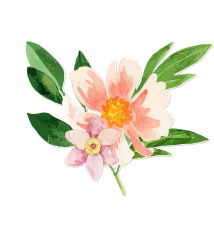
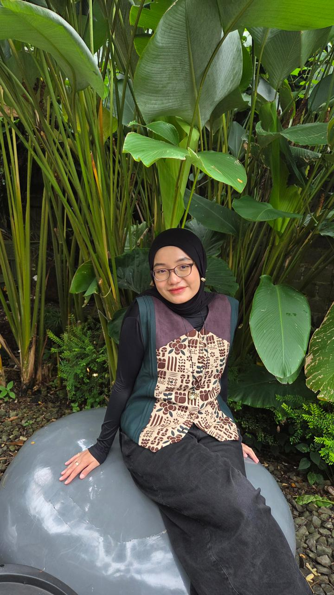
Putri Ketiga dari
Bapak M. Isa Ansyori
& Ibu Nur Jannah
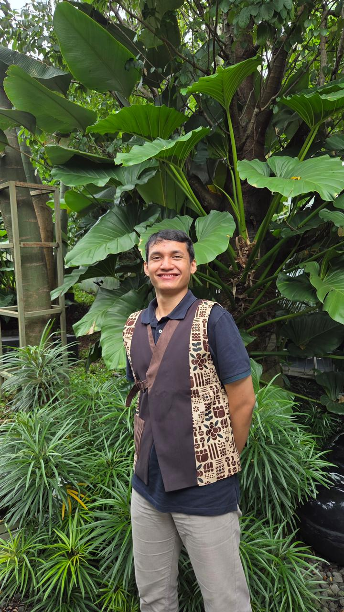
Putra Pertama dari
Bapak Bendo Setyo
& Ibu Eny Ratna Ningsih
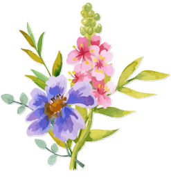
Sabtu
29 Agustus 2026
09.00 WIB – 12.00 WIB
Batamera Koffie
The Taman Dayu, Sukorejo, Karang Jati, Kecamatan Pandaan, Pasuruan, Jawa Timur
Petunjuk Lokasi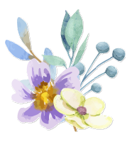
Love Story
Rangga dan Shafira pertama kali bertemu di bangku kuliah — satu kelas, satu himpunan, dan perlahan tumbuh ketertarikan yang belum sempat terucap.
Foto Pertama
Buku Angkatan
Wisuda ke-128
Pandemi memisahkan mereka, hingga takdir kembali mempertemukan keduanya di Jakarta, sama-sama berkarier sebagai tenaga IT di dunia perbankan.
Pertemuan kembali itu terasa hangat dan berkesan — seolah jarak dan waktu hanya menjadi jeda, bukan akhir.
First date
in Jakarta
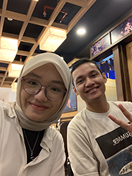
Dari sanalah hubungan yang lebih serius mulai tumbuh. Dua tahun bersama mengajarkan mereka tentang keselarasan nilai, prinsip, dan visi — sebuah keyakinan bahwa inilah jalan yang Allah SWT ridhai.
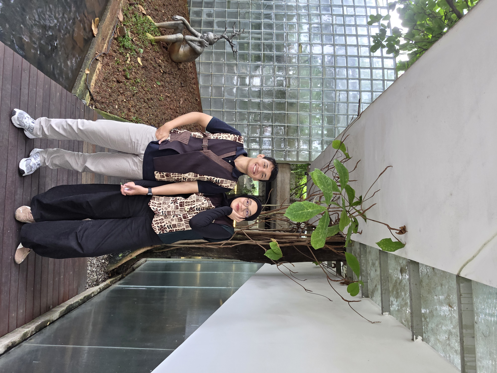
Kini, dengan hati yang mantap dan penuh syukur, keduanya siap menyempurnakan separuh agama dan memulai babak baru kehidupan bersama.
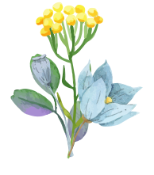
getting
married!
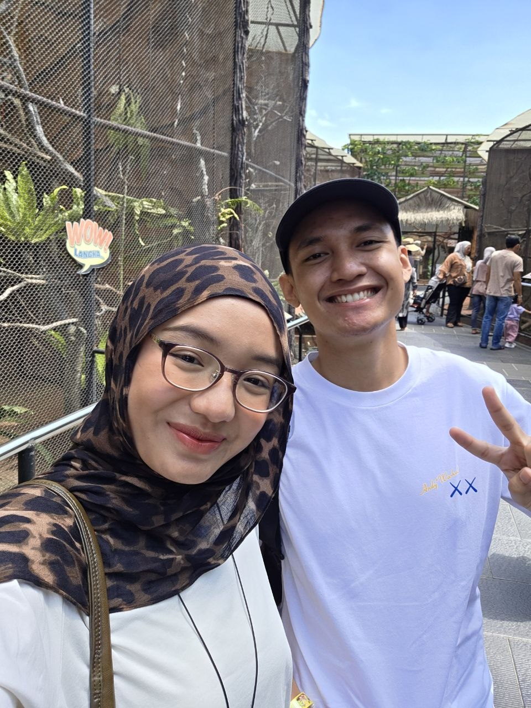
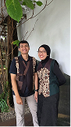
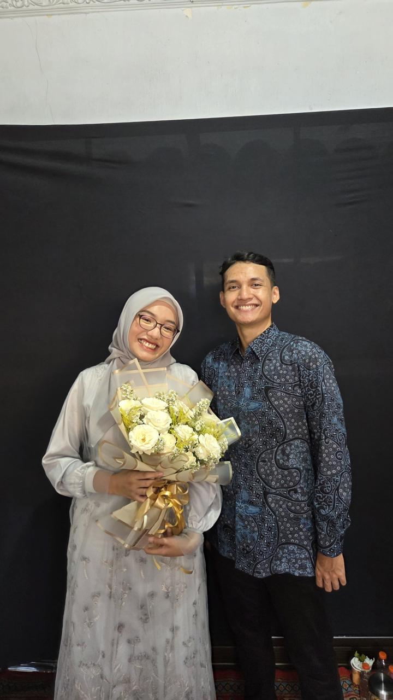
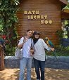
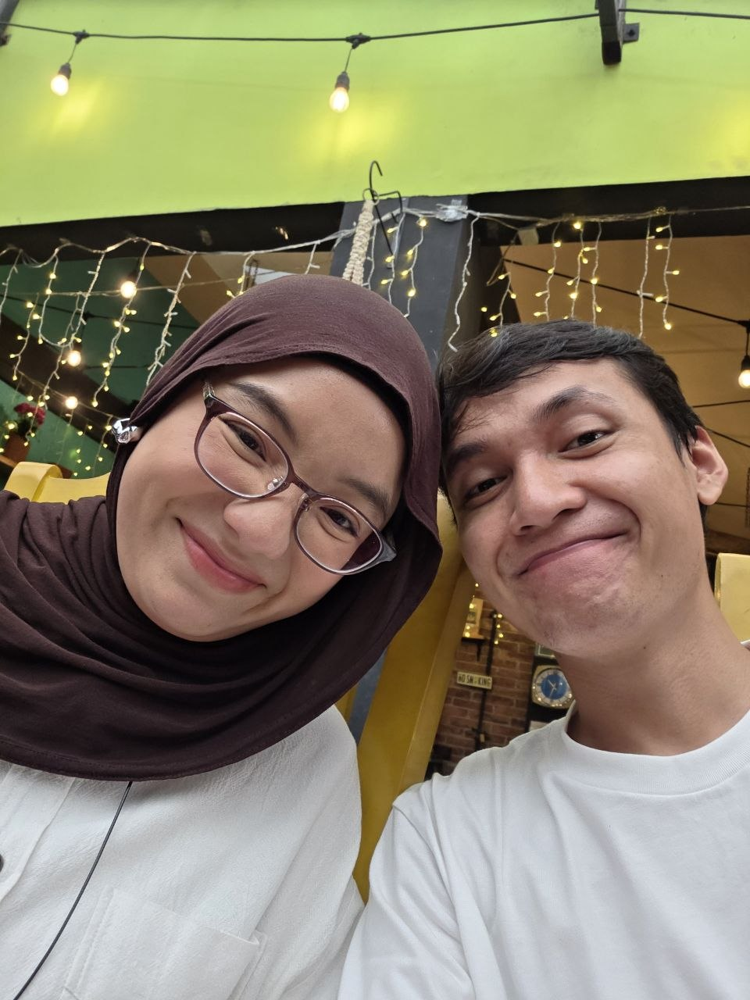
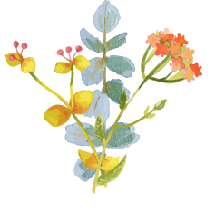
Tanda Kasih
Kehadiran dan doa restu Bapak/Ibu/Saudara/i adalah anugerah yang paling kami nantikan di hari istimewa ini. Tanpa mengurangi rasa hormat, bagi yang berkenan memberikan tanda kasih, dapat melalui:
SCAN QRIS
Menuju Hari Istimewa
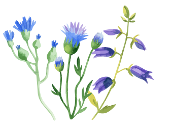
Terima Kasih
Suatu kebahagiaan dan kehormatan yang tak ternilai bagi kami, apabila
Bapak/Ibu/Saudara/i berkenan hadir dan melengkapi kebahagiaan kami
dengan doa serta restu. Hadirnya kalian adalah hadiah terindah yang
bisa kami harapkan di hari istimewa ini.
Wassalamu'alaikum Warahmatullahi Wabarakatuh
salam hangat,
Shafira & Rangga
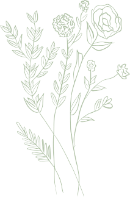